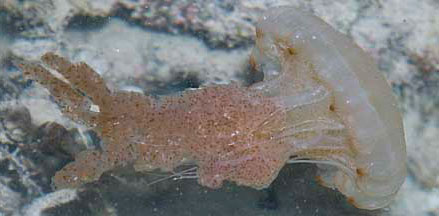
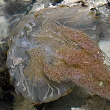
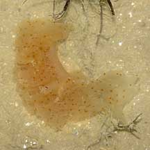
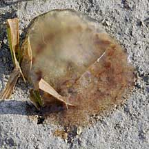
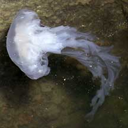
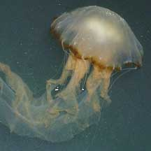
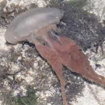
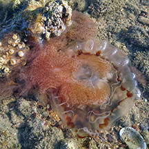

|
|
| jellyfish text index | photo index |
| Phylum Cnidaria | jellyfish | Class Scyphozoa > Order Semaeostomeae |
| Ribbon
jellyfish Chrysaora sp. Family Pelagiidae updated Sep 2025 Where seen? This jellyfish with long trailing ribbon-like oral arms is sometimes seen in numbers on our shores, more commonly on our Southern shores. And then they are not seen again for some time. Features: Bell translucent about 8-12cm, thin long tentacles around the bell, ribbon-like oral arms 20-50cm long. The oral arms are flat and ribbon-like with ruffled edges. The animal may be all white, or have orange or pink oral arms. Sometimes the edge of the bell has large brown dots. Status: There is inadequate information as at 2024 to make an informed assesment of its conservation status in Singapore. |
 Terumbu Semakau, Mar 11 |
 Terumbu Semakau, Mar 11 |
|
|
 Broken off parts of the jellyfish in the water. Pasir Ris Park, Apr 10 |
 Stranded jellyfish can still sting! Don't touch them! |
 Raffles Marina, Jul 05 |
| Ribbon jellyfishes on Singapore shores |
On wildsingapore
flickr
|
| Other sightings on Singapore shores |
 Raffles Marina, Jul 05 |
 Pulau Hantu, Apr 09 Photo shared by Toh Chay Hoon on her blog. |
 Terumbu Pempang Tengah, May 23 Photo shared by Richard Kuah on facebook. |
|
Ribbon Jellyfish @ Pulau Hantu 17Apr2010 from SgBeachBum on Vimeo. |
| Terumbu Bemban,
Apr 11 Jelly n Fish @ tBembanBesar 22Apr2011 from SgBeachBum on Vimeo. |
| Family Pelagiidae on Singapore Shores from Checklist of Cnidaria (non-Sclerectinia) Species with their Category of Threat Status for Singapore by Yap Wei Liang Nicholas, Oh Ren Min, Iffah Iesa in G.W.H. Davidson, J.W.M. Gan, D. Huang, W.S. Hwang, S.K.Y. Lum, D.C.J. Yeo, May 2024. The Singapore Red Data Book: Threatened plants and animals of Singapore. 3rd edition. National Parks Board. 663 pp.
|
| Acknowlegement With grateful thanks to Dr Michael N Dawson of the University of California, Merced for identifying this jellyfish. Links
|